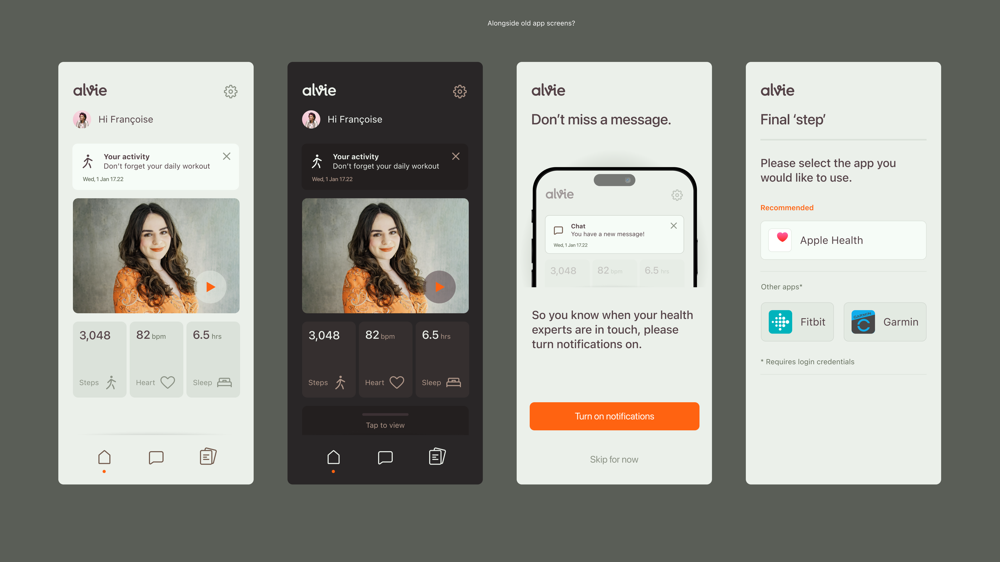
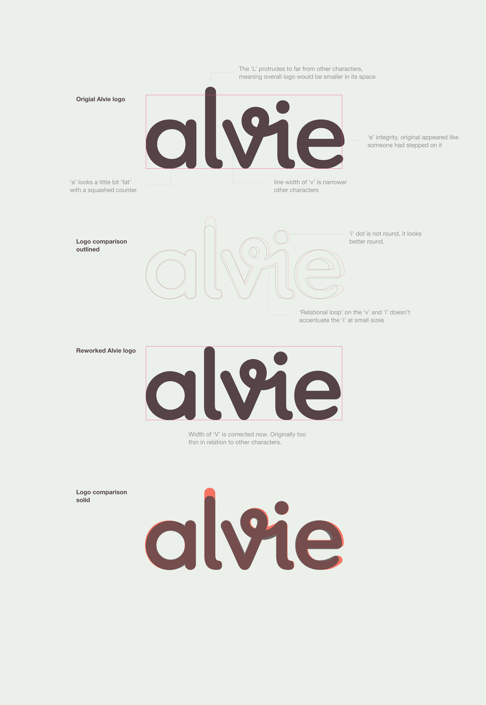
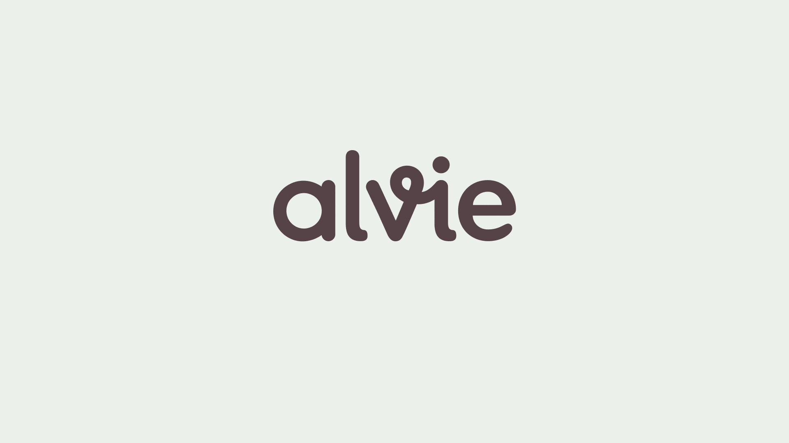
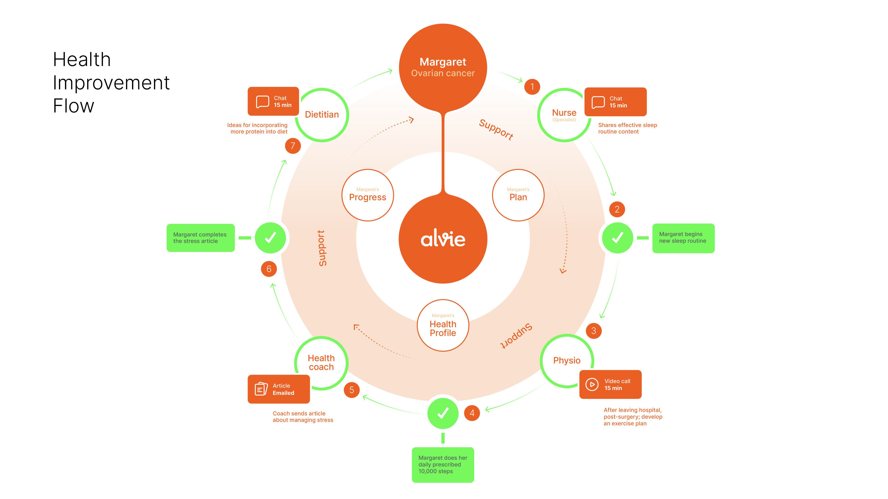
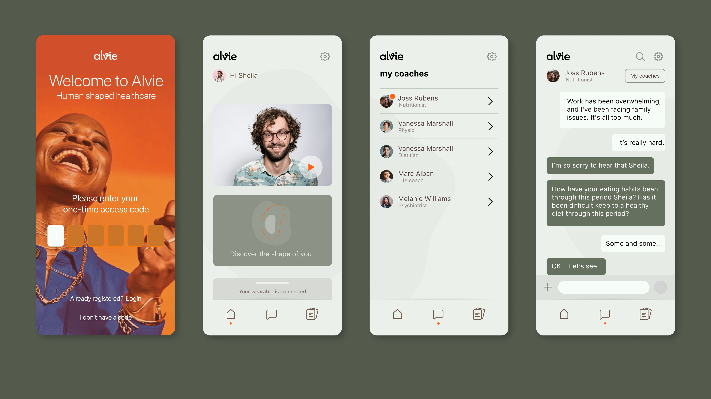
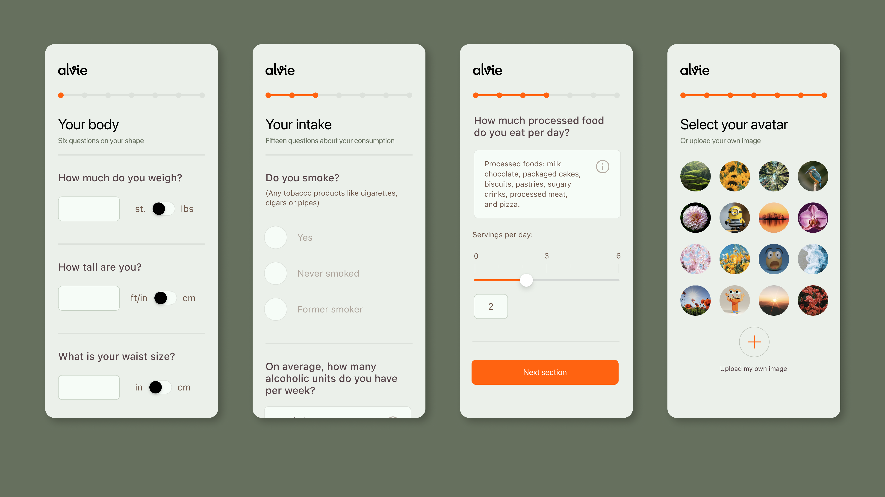
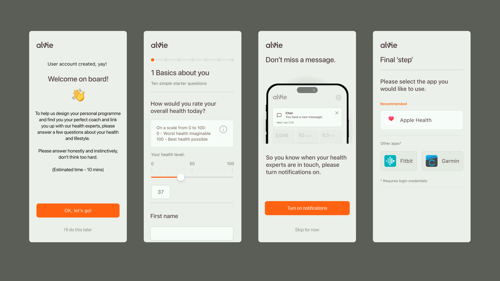
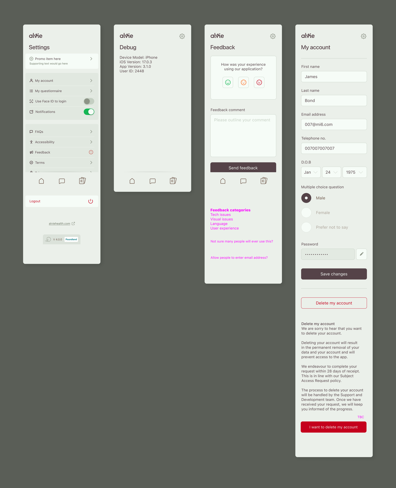
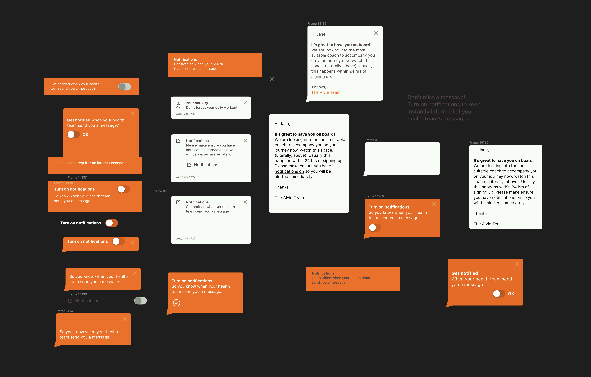
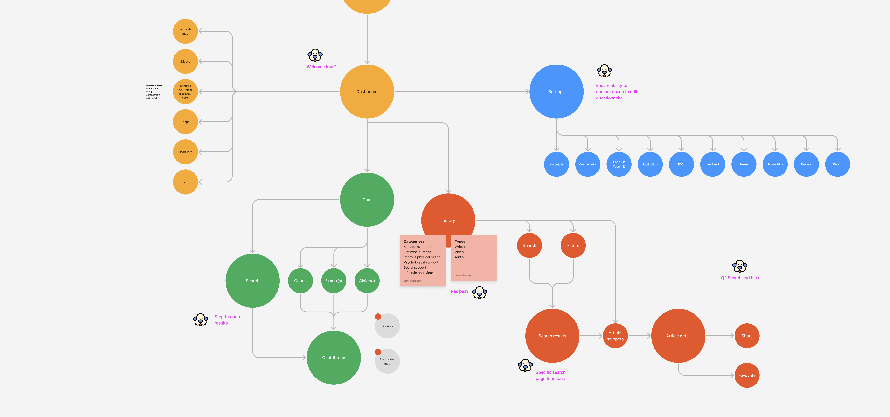
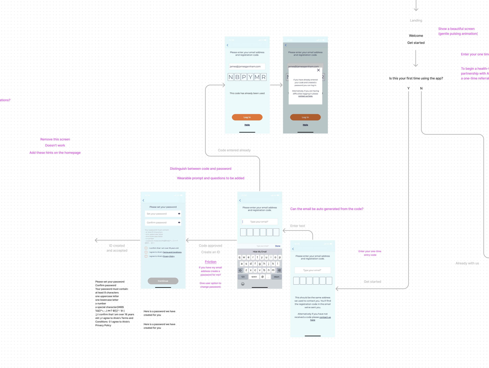
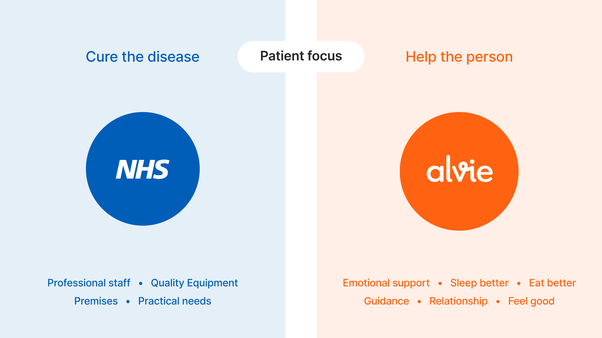
I cannot recommend James highly enough. His ability to translate the most complex ideas into simple, elegant solutions, his keen eye for detail, and deep understanding of user design principles mean he consistently delivers intuitive and visually brilliant interfaces. His empathy with users ensures he creates designs that massively exceed expectations. James is head and shoulders (quite literally too!) above all the other designers I have worked with over the years, and am confident he will quickly become an invaluable asset to any team striving to create a compelling, best-in-class digital experience.
I had the pleasure of working with James over the past year where he played a key role in us delivering a reimagined patient-facing app. From the outset, James brought a deep sense of empathy to his work, creating a design that was not only functional but also welcoming and reassuring for our users. He was able to take the complexities and challenges with the previous version of the app and translate these into intuitive, empathetic experiences which resulted in a significant uplift to key business onboarding metrics. Beyond his design expertise, James quickly became a key part of the team, and the wider company. He integrated seamlessly, feeling more like an internal team member than an external consultant. His enthusiasm, professionalism, and passion for our mission were contagious, making him a joy to work with. Everyone who collaborated with him appreciated his positive energy and commitment to excellence. One of his most impactful contributions was professionalising our design processes. By creating a structured design system, he brought efficiency and consistency to our workflows, ensuring that future iterations of the product would be both scalable and maintainable. He also struck a great balance between thinking strategically about the long-term vision and delivering high-quality work in the present. I would highly recommend James to any team looking for a talented, thoughtful, design lead. His skills, attitude, and collaborative approach make him an asset to any project and I look forward to working with him again in future!